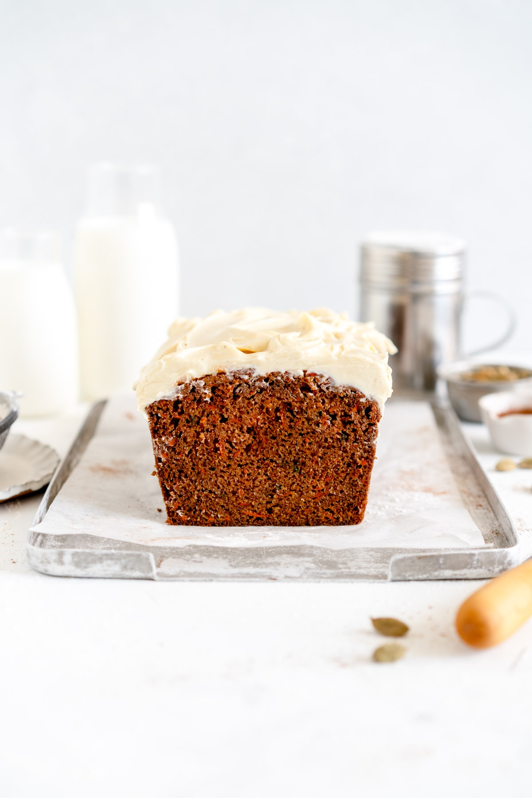

Carrot Cake Recipe

Description
This Carrot Cake Loaf recipe is super easy. It comes together quickly, is great to make ahead, and is
perfectly moist and light. The Carrot Loaf Cake itself is dairy free, or there is an option to finish
it with a silky maple cream cheese frosting.
Ingredients
Loaf Cake
- 130g light or dark brown sugar
- 65g granulated sugar
- 2 large eggs, at room temperature
- 125g Filippo Berio Delicato Extra Virgin Olive Oil
- 1 tsp vanilla bean paste or vanilla extract
- 210g all-purpose flour
- 1 tsp baking powder
- 1 tsp baking soda
- 1 tsp kosher salt
- 1 ½ tsp cinnamon
- ¾ tsp cardamom
- ½ tsp ground ginger
- 180g freshly grated carrot
Maple Cream Cheese Frosting
- 225 full fat cream cheese, at room temperature
- 35g powdered sugar, sifted if lumpy
- ½ tsp vanilla bean paste or extract
- pinch of salt
- 1 Tbsp Maple Syrup
Steps
Loaf Cake
- Preheat the oven to 350°f / 180°c. Grease and line a 1 lb (8"x4") loaf pan with a piece of parchment paper that extends over the sides.
- In a large bowl, whisk together the brown sugar, granulated sugar, eggs, olive oil, and vanilla until well combined.
- In a separate medium bowl, combine the flour, baking powder, baking soda, salt, cinnamon, cardamom, and ginger. Add to the wet ingredients and mix until just combined.
- Add the grated carrot and switch to a rubber spatula, and mix until incorporated.
- Transfer the mixture to the prepared loaf pan.
- Bake for 60 minutes or until the top springs back when pressed lightly and a skewer or tester inserted into the center comes out clean or with a few moist crumbs attached.
- Allow to cool in the pan for 10 minutes then remove onto a wire rack and allow to cool completely.
Maple Cream Cheese Frosting
- In a medium bowl using a spatula or electric mixer, combine together the cream cheese, powdered sugar, vanilla, and salt until smooth and incorporated.
- Add the maple syrup and mix to combine.
- Spread the frosting over the surface of the cooled carrot loaf cake. Slice into pieces using a serrated or sharp knife.